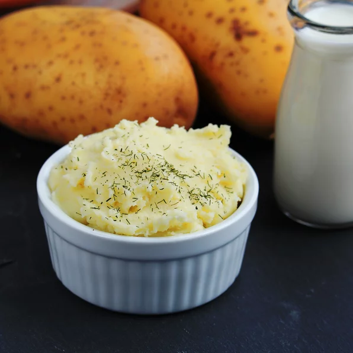

Basic Mash Potatoes

Description
If you love good, old fashioned mashed potatoes this is the perfect recipe. Simple and delicious.
Ingredients
- 2 pound baking potatoes,peeled and quartered
- 2 tablespoons butter
- 1 cup milk
- salt and pepper to taste
Directions
-
Bring a pot of salted water to a boil. Add potatoes and cook until tender but still firm, about 15
minutes; drain.
- In a small saucepan heat butter and milk over low heat until butter is melted. Using a potato masher or
electric beater, slowly blend milk mixture into potatoes until smooth and creamy. Season with salt and
pepper to taste.
Nutrition Facts
Per Serving: 257 calories; protein 5.6g; carbohydrates 43.7g; fat 7.2g; cholesterol 20.1mg;
sodium 76.1mg. Full Nutrition